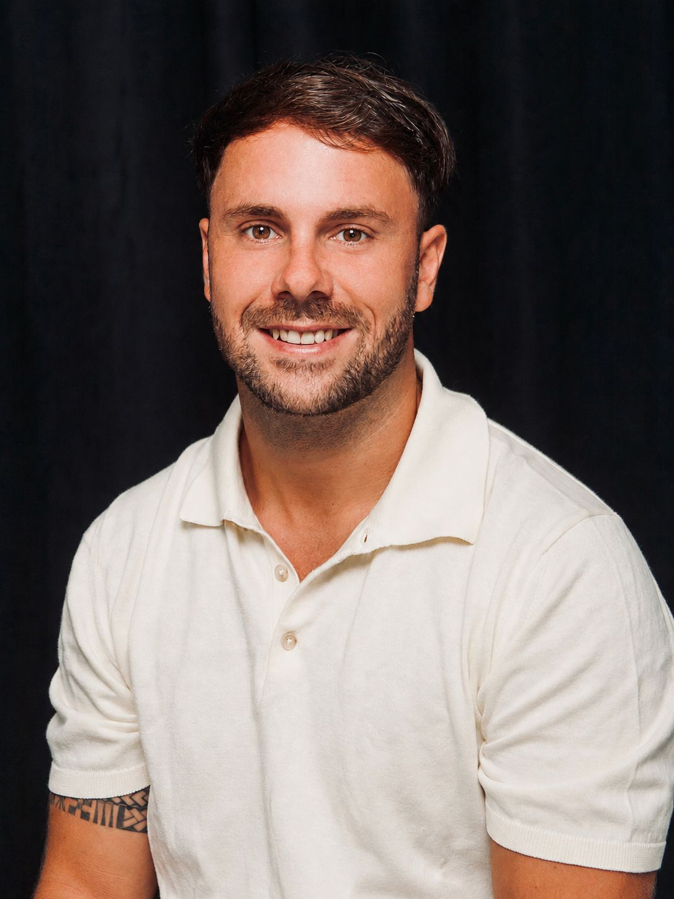

Passionné par la physiologie humaine, j'ai suivi 5 ans de formation au Collège Ostéopathique de Bordeaux. J'exerce aujourd'hui au sein d'une clinique pluridisciplinaire aux côtés de kinésithérapeutes et d'une psychologue, pour une prise en charge véritablement globale.
Ma conviction : chaque patient est unique. Qu'il s'agisse d'un nourrisson, d'un sportif de haut niveau, d'une femme enceinte ou d'un senior, j'adapte chaque séance à votre situation, votre histoire corporelle et vos objectifs de santé.
Je propose des consultations en français et en anglais, au cabinet à Bordeaux, à domicile, et au Cap Ferret.
Prendre rendez-vous[Votre philosophie de soin en une ou deux phrases — ce qui guide votre pratique au quotidien.]
[Description de votre approche de l'écoute patient.]
[Description de votre rigueur technique et diagnostique.]
[Description de votre vision globale du corps et de la santé.]
Consultations sur rendez-vous à Bordeaux, 30 Av. Vercingétorix
Réserver sur Doctolib